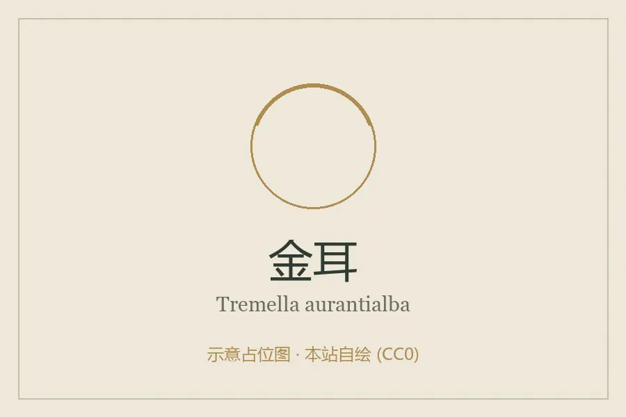

真菌 · 真菌界
金耳 Tremella aurantialba

金耳的子实体呈金黄色、半透明胶质状，形似花朵，是珍贵的食用菌，口感滑糯，可炖汤和制作甜品。
- 分类
- 门担子菌门纲银耳纲目银耳目科银耳科属银耳属
- 栖息环境
- 高原阔叶林中的枯木，喜凉爽湿润、散射光环境
- 地理分布
- 中国云南、四川、西藏等地的高原林区，现有人工栽培
- 保护级别
- 暂无评估（可栽培食用菌）
物种志
金耳是担子菌门银耳科的真菌，子实体由多个瓣片组成，整体呈脑状或花朵状，直径 5–15 cm，鲜时金黄色至橙黄色、半透明胶质，柔软有弹性，干后收缩变硬、呈橙褐色。瓣片表面有皱褶，子实层生于表面，担孢子近球形，孢子印白色。
金耳野生于阔叶树的枯木上，主要分布于中国云南、四川、西藏等高原林区，是珍贵的食用菌。它对生长条件要求较高，栽培时常需要与伴生菌共同培养，产量有限，因此价格较高。金耳富含金耳多糖、胶质和多种氨基酸，口感滑糯，常与红枣、枸杞、冰糖炖成甜汤，也可炒食、做羹；传统认为金耳有滋阴润肺、养胃生津之效。它色泽金黄、形态美观，是云南特色食材之一。
形态与习性
- 子实体花瓣状或脑状，直径 5–15 cm
- 颜色金黄至橙黄，半透明胶质
- 孢子印白色
- 产地云南、四川、西藏高原林区
- 栽培需伴生菌，产量有限
- 食用炖汤、甜品与羹
趣味知识
- 金耳通体金黄半透明，像一朵胶质的小花。
- 它多产自云南、四川、西藏的高原林区，是当地特色食材。
- 金耳口感滑糯，常和红枣、枸杞一起炖甜汤。